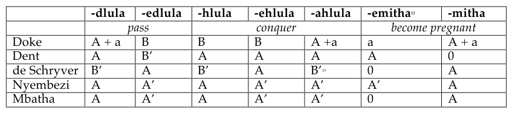

RAIL 2022Traduction automatique
Comment traiter les verbes dits "à voyelle avec des formes variantes non voyelliques" dans un lexique bilingue zoulou ? Le cas d'une approche pragmatique.
Traduction automatique, non relue par un humain. L'article original est la version de référence ; les phrases soulignées sont celles dont les contrôles automatiques n'étaient pas sûrs.
Proceedings of the 3rd Workshop on Resources for African Indigenous Languages (RAIL 2022), Journal of the Digital Humanities Association of Southern Africa.
Traduction par Ernst van Gassen (Arktos AI Lab), sous licence CC BY-SA 4.0 comme l'original. Réutilisation permise avec attribution ; partage des adaptations dans les mêmes conditions. Les auteurs originaux n'ont pas relu ni approuvé cette traduction.
Texte brut réutilisable, avec sa licence : Français · LICENCE
Affiliations
Michel Lafon1
research fellow (retired)
CNRS Llacan Paris, IFAS - Johannesburg
& CenterPoL, University of Pretoria
& Bolofo Mongezi
PhD Candidate, Wits School of Education
Adresses e-mail retirées pour la protection de la vie privée. Elles figurent dans le PDF original.
Résumé
Bien que la lemmatisation en zoulou (et langues apparentées) reste à ce jour un problème partiellement non résolu, les dictionnaires, bilingues et monolingues, adoptant des stratégies différentes en ce qui concerne les noms, nous souhaitons nous concentrer ici sur un aspect quelque peu mineur de la question : comment lemmatiser les verbes avec des voyelles initiales optionnelles. Comme la variation se produit à l'initiale, il est crucial qu'elle reçoive un traitement approprié dans le dictionnaire, sinon l'utilisateur pourrait être mal orienté ou mal informé.
Mots-clés
isiZulu - lexicographie - verbes voyelles
Nous commencerons par présenter les verbes avec voyelles initiales optionnelles en zoulou, en contrastant les stratégies de lemmatisation proposées par les principaux dictionnaires disponibles, dont certaines manquent à notre avis de cohérence. Nous présenterons ensuite la solution pragmatique que nous avons adoptée dans notre lexique bidirectionnel français-zoulou et zoulou-français, qui, selon nous, rend une meilleure justice à la langue.
1 Le corpus
Le zoulou (ou isiZulu)[2] est en termes démographiques la principale langue africaine (bantoue) parlée en Afrique du Sud,[3] étant dans ses différents sociolectes la première langue ou la langue maternelle de près de 13 millions de personnes, soit 22 % d'une population d'au moins 59 millions.[4] Bien qu'il existe un certain nombre de dialectes régionaux ou sous-régionaux, sa forme standard, enseignée dans les écoles et propagée dans les situations formelles, y compris la littérature, la presse écrite et orale, ainsi que les cérémonies officielles, est largement acceptée. Il bénéficie également d'une orthographe bien acceptée. Cet article est fondé sur la langue standard et nos données proviennent principalement de sources secondaires, c'est-à-dire de dictionnaires cités dans l'article, complétées par des observations aléatoires tirées de documents écrits formels et informels ainsi que de la parole informelle, et de la maîtrise de locuteur natif d'un co-auteur.
Le zoulou possède un inventaire plutôt vaste de ce que (Clement Martyn Doke 1992, 131) appelle des "verbes à voyelles avec des formes variantes non-voyelles", tels que
-edlula or -dlula,[5] pass[6]
-esutha or -sutha, be satiated with food
La voyelle initiale est la plupart du temps /e/, mais /a/ et /o/ apparaissent aussi, plus souvent comme variantes ultérieures (exemples tirés des dictionnaires) :
-ehlula, -ahlula or -hlula, conquer, defeat
-ejwayela, -ojwayela or ⎯jwayela, be used to
-ephula, -aphula, -ophula, or ⎯phula, break
Alors que la présence de formes variantes dans le standard peut provenir de l'incorporation de traits régionaux puisque, bien que principalement fondé sur « le dialecte du Zululand central » (Kubeka 1979, 83), il inclut sans doute des traits d'autres variétés, il semble que la variation soit désormais devenue évolutive, car certains des verbes à initiale vocalique de Doke ne semblent plus valides aujourd'hui (mais voir plus bas) :
?-efunda for -funda study ?-egcwala for -gcwala, be full ?-emithi for -mithi be with small (animals); become pregnant ?-ojwayela for -jwayela, be used to
Cela indiquerait un phénomène d'érosion des voyelles. Cependant, le fait que certains de ces verbes, comme -gcwala, semblent avoir leur source dans des idéophones (gcwa, être plein à ras bord) qui commencent par une consonne suggère que cette explication n'est pas suffisante. La voyelle aurait alors été ajoutée (ou l'idéophone aurait été obtenu par suppression de la voyelle). Nous n'investiguerons pas davantage cette question, cependant, car elle n'est pas pertinente pour le problème en cours.
Les noms dérivés de la même racine montrent la même alternative :
abalusi ou abelusi, bergers (cf. ⎯elusa ou -lusa, troupeau) mais toutes les possibilités ne sont pas toujours admises :
umelaphi[7] healer : ? umlaphi,
La même variation peut s'appliquer aux verbes étendus et aux noms dérivés de ceux-ci :
-ehluleka or -ahluleka, fail and isehluleki or isahluleki failure -efundisa or -fundisa teach, and abafundisi or abefundisi, priests -efundisa seems clearly obsolete but the noun abefundisi is attested
Il arrive aussi qu'une variante ∂ ne couvre pas toutes les significations de la variante ß, ce qui suggère que les verbes étaient à l'origine différents mais sont devenus confondus en raison de la perte phonétique de la voyelle initiale:
-phuza has now two meanings: ⎯phuza, drink and -phuza (variant of -ephuza) be late
À cette catégorie nous ajoutons les trois (ou quatre) verbes avec /i/ comme voyelle initiale, que Doke dans le passage cité ci-dessus désigne comme « verbes à voyelle latente » en raison du fait que /i/ ne peut apparaître dans les formes conjuguées que lorsqu'il est précédé d'une voyelle /a/ avec laquelle il se coalesce alors pour donner /e/ :[8]
-(i)ma: stand: ngiyema or ngiyama, I stand
-(i)-za, come: bayeza or bayaza, they are coming
-(i)zwa, understand: ubezwa or ubazwa, listen to them
Puisqu'en zoulou /i/ tend à disparaître lorsqu'il suit toute voyelle autre que /a/ (ou à fusionner si la voyelle précédente est /i/), aucune conclusion ne peut être tirée des cas où le /i/ initial n'apparaît pas, quant à la variante du radical du verbe dans un cas donné :
ngimile, I stood: |ngi|-|im|-|ile| or |ngi|-|m|-|ile| uzwile, you heard: |u|-|izw|-|ile| or |u|-|zw|-|ile|
Nous postulons donc pour ces verbes une forme variante du radical avec une voyelle initiale, semblable à la situation ci-dessus :
-ima or -ma, stand
-iza or -za, come
-izwa or -zwa, hear, understand
Le choix de la variante semble lié à la forme du temps, à la présence d'une extension après la racine qui semble entraîner une préférence pour la forme plus courte, commençant par une consonne, ainsi qu'au radical lui-même. Les exemples suivants sont tirés de nos propres observations de parole non sollicitée :
ngiyezwa rather than ngiyazwa, I hear ngiyazwisisa rather than ngiyezwisisa, I understand very clearly kuyezwakala or kuyazwakala, it is understandable ngiyeza rather than ngiyaza, I am coming ngiyabazisa endlini rather than ngiyabezisa endlini, I make them come home ngiyema or ngiyama, I stand ngiyamela abafazi rather than ngiyemela abafazi, I am waiting for the women
2 Traitement dans les dictionnaires
Comment ces faits sont-ils traités dans les principaux dictionnaires zoulous?
En nous limitant aux éléments déjà mentionnés, nous comparons les principaux dictionnaires actuellement disponibles :[9] bilingue — Doke & al. Zoulou-anglais et anglais-zoulou (Clement M. Doke et al. 1999), Scholar's Zulu de Dent et Nyembezi (Dent et Nyembezi 1995), celui de Schryver (de Schryver 2015) - et monolingues - celui de Nyembezi (Nyembezi 1992) et celui de Mbatha (Mbatha 2006). Nous savons que ces dictionnaires n'ont pas été compilés dans le même cadre. Alors que les quatre plus anciens suivent, avec de petites variations entre eux, la stratégie établie par Doke pour la lexicographie zouloue, qui lemmatise les radicaux plutôt que les mots, celui de Schryver, outre le fait d'être basé sur un corpus, introduit une approche qui cherche à lemmatiser les mots plutôt que les radicaux (de Schryver et Wilkes 2008). Cependant, cette révolution dans la lemmatisation zouloue n'affecte pas vraiment les verbes. Même si Doke et Nyembezi citent les verbes sous l'impératif tandis que d'autres dictionnaires renvoient au radical verbal, défini de manière appropriée dans (Marlo 2013) comme « une racine obligatoire, un ou plusieurs suffixes dérivationnels pouvant apparaître [également appelés extensions][10] et un suffixe final flexionnel communément appelé “voyelle finale” », la forme est segmentalement similaire, l'impératif singulier n'étant rien d'autre en zoulou que ledit radical doté d'une structure tonale spécifique.
Nous utilisons les symboles suivants:
A : entrée principale (comme le révèle la longueur de la description) ;
A': entrée principale bien que plus courte que A [ce qui implique deux entrées principales dans le même dictionnaire]
A + a : entrée principale + renvoi vers au moins une variante ;
B : entrée raccourcie, avec renvoi à l'entrée principale ;
B' : référence croisée vers le principal ;
0 : aucune mention de l'élément



3 Observations
Il semble, même en jugeant à partir d'un échantillon aussi limité et aléatoire, que l'incohérence prévaut au sein des dictionnaires ainsi qu'entre eux, comme le suggère un coup d'œil rapide au tableau.
- Du zoulou à l'anglais.
Puisque Doke fait spécifiquement référence aux "verbes voyelles avec des formes variantes non voyelles", on s'attendrait à ce que ces verbes soient systématiquement entrés sous la voyelle avec une indication qu'une variante commençant par une consonne existe : ce n'est pas le cas, mais la plupart des exemples incluent une référence croisée, ce qui atténue le problème. Chez Dent, en revanche, la répétition est fréquente: -ephula, -aphula et -phula constituent, entre autres exemples, trois entrées différentes avec presque les mêmes définitions répétées sans aucun renvoi. De Schryver est plus cohérent dans ses références croisées entre la forme (supposée) moins fréquente et la forme principale.
En ce qui concerne les verbes dits à voyelle latente ou commençant par i, Doke est le seul à faire systématiquement mention du "i latent" dans la description de toutes les entrées correspondantes. Dent et de Schryver n'y font aucune allusion explicite tout en l'impliquant néanmoins à travers des exemples : sous -zwa, Dent donne ukungezwa nakutshelwa, vouloir voir par soi-même (« ne pas vouloir qu'on vous le dise »), où le marqueur négatif -nga- devient nge car sa voyelle /a/ se coalesce avec le /i/ initial ; [14][15]. De la même manière, sous -za de Schryver donne abantu beza ngobuningi, les gens sont venus dans leur nombre, alors que beza ne peut pas être obtenu à partir du préfixe de sujet ba- et le verbe donné comme -za. Même situation sous zwakala (entrée distincte de -zwa) avec kuyezwakala c'est compréhensible.[16]
- Anglais vers Zulu
Dans les trois dictionnaires bilingues, seule la forme donnée comme entrée principale dans le Zulu vers l'Anglais est indiquée, sans aucune mention de variantes. Cela s'applique entre autres à Dent où, sous break, seul -aphula est répertorié.
- Zoulou monolingue
Nyembezi et Mbatha fournissent des descriptions presque similaires pour chaque variante, chacune traitée comme une entrée principale (voir -dlula, -edlula inter alia), indiquant occasionnellement l'existence d'une variante assimilée à un synonyme comme dans la série -hlula et -phula. Même si les variantes sont en quelque sorte synonymes, il serait logique dans un travail linguistique de discriminer. Et cela n'exclut pas les incohérences: l'un des exemples de Mbatha sous dlula est ukwedlula ngendlu yakhiwa pour ne pas offrir d'assistance aux personnes qui travaillent, ce qui devrait apparaître sous -edlula. Même chose pour uwephulile umoya wami lo mfana, ce garçon m’a brisé le cœur, ce qui devrait illustrer ephula plutôt que -phula. Quant à la « voyelle latente », aucune mention explicite. Cependant, Mbatha inclut dans ses exemples des formes conjuguées où le "i latent" apparaît : sous -za : (…) uyeza, (…) vous arrivez ; sous -zwa : (…) sengathi akezwa (…) comme s'il ne comprend pas ; ukungezwa ngokutshelwa (voir ci-dessus et note 14).
4 Une approche pragmatique
Notre lexique bidirectionnel français / zoulou (Lafon et Mongezi 2022) ne prétend pas être exhaustif mais plutôt un support pratique pendant qu'on est engagé dans une conversation. L'espace et le coût étaient de grosses préoccupations. Pourtant, nous avons visé à couvrir autant de vocabulaire que possible tout en essayant de rester cohérent tout au long.
Dans la partie du français vers le zoulou, nous avons choisi de placer la voyelle possible entre parenthèses, afin d'offrir un maximum d'information dans un minimum d'espace, en traitant les verbes commençant par i d'une manière similaire:
passer (to pass): -(e)dlula; aller (to come): -(i)za
Ainsi toutes les variantes des formes conjuguées peuvent être déduites des lemmes tels qu'ils se présentent.
Évidemment la même stratégie n'aurait pas pu être suivie dans la partie zoulou vers français. Afin d'éviter aussi bien la répétition que l'omission, nous avons choisi de lemmatiser la forme qui nous paraissait la plus courante (en nous fondant sur l'intuition du locuteur natif), la ou les éventuelles autres formes étant toutefois systématiquement répertoriées et renvoyées par un renvoi à celle retenue comme lemme :
-edlula : voir [see] -dlula
-iza : voir [see] -za
Cette stratégie a contrebalancé au moins partiellement toute estimation erronée de notre côté de la fréquence relative des variantes. La stratégie n'est évidemment pas ignorée par tous les dictionnaires examinés ;[17] elle n'est plutôt pas appliquée systématiquement.
5 Conclusion
Il semblerait, d'après l'examen du traitement lexicographique de quelques entrées dans des dictionnaires zoulous anciens comme récents, tant bilingues que monolingues, traditionnels comme récents et fondés sur corpus et sur la fréquence (ceux de de Schryver), que les deux questions des « verbes à voyelle avec variantes sans voyelle » et des « verbes à voyelle latente » ont été largement négligées. Aussi mineur que cela puisse paraître, il reste un angle mort. Notre solution ad hoc, consistant à inclure systématiquement toutes les variantes de la manière la plus simple et la moins encombrante, pourrait alors contribuer à une meilleure couverture dans ce cas particulier. Cela nous rappelle qu'il n'existe pas de Saint Graal pour atteindre la cohérence et la convivialité dans la lexicographie du zoulou et des langues apparentées. Les questions lexicographiques doivent être envisagées en tenant compte de leurs spécificités, seule manière de fournir une information adéquate, complète et facilement accessible.
Notes
1 Auteur correspondant
2 Il est jugé approprié en Afrique du Sud de se référer aux langues locales africaines (bantu) avec leurs préfixes au nom du respect de l’auto-identification. Nous avons cependant choisi d'utiliser de manière cohérente les conventions de dénomination de la langue anglaise. Ainsi, nous maintenons « French » plutôt que « français » dans le texte.
3 Bantu est un terme classificatoire commode pour une famille de langues indigènes du continent africain. Le terme n'a aucune implication en dehors du domaine linguistique. Les langues de cette famille partagent un certain nombre de traits, notamment un système de classes nominales caractérisé par des préfixes et des schèmes d'accord.
4 Extrapolé à partir du recensement de 2011 qui comprenait une question sur l'ethnicité, et des chiffres de population pour 2020 (voir https://www.statssa.gov.za). Ce chiffre ne rend probablement pas justice à l'immigration récente. Les résultats du recensement de 2022 ne sont pas publiés à ce jour.
5 Les verbes sont cités sous leur radical, précédé d'un trait d'union pour indiquer que toute forme conjuguée — à l'exception de l'impératif — nécessite des éléments prépositionnés. Voir également ci-dessous.
6 Les traductions sont fournies afin de faciliter l'identification de chaque élément, mais ne prétendent nullement couvrir toute la nuance de sens d'un mot ou d'un radical donné.
7 Entendu dans un épisode de la série télévisée en zoulou Uzalo 207, novembre 2018, SABC 1
8 Doke inclut -iva, augmenter, mais nous l'écartons en raison de son obsolescence. -ipha et -ikha sont parfois donnés comme variantes de -pha donner et -kha puiser de l'eau respectivement, mais celles-ci n'étant pas communément acceptées, nous nous abstenons également de les prendre en compte.
9 Nous n'avons pas eu accès aux travaux substantiels antérieurs, tels que (Colenso 1861), (Samuelson 1923) ou (Bryant 1905), qui, de son propre aveu, sont les principales sources de Doke.
10 Notre ajout.
11 Élément apparemment manqué ou omis par de Schryver, ce qui est étonnant car il semble être un terme assez fréquent avec des formes telles que ngisuthi, je suis rassasié, etc.
12 -emithi et -mithi dans Doke.
13 Aucune entrée spécifique *-ahlula mais le passif -ahlulwa renvoie à -ehlulwa
14 Cf. par exemple ukungavumi ukutshelwa, ne pas accepter qu'on vous dise où -nga- reste inchangé car il précède une consonne.
15 Comme les exemples de verbes de Dent s'en tiennent au radical verbal, il est difficile de voir si des occurrences de « i latent » feraient surface.
16 L'incapacité à identifier la présence de la voyelle initiale dans de tels cas suggère que la même chose a pu se produire ailleurs : ainsi, l'absence de verbes à initiale vocalique dans le dictionnaire n'implique pas nécessairement qu'ils n'aient pas été rencontrés dans le corpus ; elle indiquerait plutôt une incapacité de l'analyseur syntaxique à les en extraire.
17 Même situation dans un dictionnaire isiNdebele zimbabwéen (Hadebe 2001)
6 Références
Bryant, Alfred T. 1905. A Zulu-English Dictionary: With Notes on Pronunciation, a Revised Orthography and Derivations and Cognate Words from Many Languages; Including Also a Vocabulary of Hlonipa Words, Tribal-Names. Etc., a Synopsis of Zulu Grammar and a Concise History of the Zulu People from the Most Ancient Times. Maritzburg: Davis & Sons.
Colenso, John William. 1861. Zulu English Dictionary. Vol. 1. Pietermaritzburg.
Dent, G. R., and C. L. Sibusiso Nyembezi. 1995. Scholar's Zulu Dictionary; English-Zulu, Zulu-English. [1969]. Pietermaritzburg: Shuter and Shooter.
Doke, Clement M., D. Mc K. Malcolm, J. M. A. Sikakana, and B. Wallet Vilakazi. 1999.
English-Zulu, Zulu-English Dictionary. [1958]. Wits University Press.
Doke, Clement Martyn. 1992. Textbook of Zulu Grammar. [1927]. 1 vols. Cape Town: Longmans Southern Africa.
Hadebe, Samukele, ed. 2001. Isichazamazwi SesiNdebele. Vol. 1. Harare: College Press Publishers and The African Language Research Institute (ALLEX).
Kubeka, Isaac Sibusiso. 1979. 'A Preliminary Survey of Zulu Dialects in Natal and Zululand'. Univ of Natal, dep of Zulu language & literature.
Lafon, Michel, and Bolofo Mongezi. 2022. Lexique Français-Zoulou; Isichayamagama SesiZulu Kuya KwisiFulentshi. Moroni: KomEdit.
Marlo, Michael R. 2013. 'Verb Tone in Bantu Languages: Micro-Typological Patterns and Research Models'. Africana Linguistica XIX: 137-234.
Mbatha, M. O. 2006. Isichamazwi SesiZulu. Pietermaritzburg, South Africa.
Nyembezi, C. L. Sibusiso. 1992. AZ : Isichazimazwi Sanamuhla Nangomuso. Pietermaritzburg: Reach Out Publishers.
Samuelson, R.C.A. 1923. The King Cetywayo Zulu Dictionary. Durban.
Schryver, Gilles-Maurice de, ed. 2015. Funda IsiNgisi. Learn IsiZulu. IsiZulu-IsiNgisi IsiNgisi-IsiZulu. Isichazamazwi Sesikole. School Dictionary. 2nde ed. Cape Town: Oxford University Press.
Schryver, Gilles-Maurice de, and Arnett Wilkes. 2008. 'User-Friendly Dictionaries for Zulu: An Exercise in Complexicography'. In Proceedings, edited by Elisenda Bernal and Janet DeCesaris, 827-36. Barcelone, Institut Universitari de Linguistica Applicada.
English et Français
How to deal with so-called “vowel verbs with variant non-vowel forms” in a bilingual Zulu lexicon? The case for a pragmatic approach.
Comment traiter les verbes dits "à voyelle avec des formes variantes non voyelliques" dans un lexique bilingue zoulou ? Le cas d'une approche pragmatique.
Affiliations
Michel Lafon1
research fellow (retired),
CNRS Llacan Paris, IFAS - Johannesburg
& CenterPoL, University of Pretoria,
& Bolofo Mongezi
PhD Candidate, Wits School of Education
Affiliations
Michel Lafon1
research fellow (retired),
CNRS Llacan Paris, IFAS - Johannesburg
& CenterPoL, University of Pretoria,
& Bolofo Mongezi
PhD Candidate, Wits School of Education
Abstract
Résumé
Whilst lemmatisation in Zulu (and cognate languages) remains to this day a partially unsettled issue, with dictionaries, both bilingual and monolingual, adopting differing strategies in respect of nouns, we wish to focus here on a somewhat minute aspect of the matter: how to lemmatize verbs with optional initial vowels. As the variation occurs at the initial, it is crucial that it receives proper dictionary treatment, lest the user be misdirected or misinformed.
Bien que la lemmatisation en zoulou (et langues apparentées) reste à ce jour un problème partiellement non résolu, les dictionnaires, bilingues et monolingues, adoptant des stratégies différentes en ce qui concerne les noms, nous souhaitons nous concentrer ici sur un aspect quelque peu mineur de la question : comment lemmatiser les verbes avec des voyelles initiales optionnelles. Comme la variation se produit à l'initiale, il est crucial qu'elle reçoive un traitement approprié dans le dictionnaire, sinon l'utilisateur pourrait être mal orienté ou mal informé.
Keywords
Mots-clés
isiZulu - lexicography - vowel verbs
isiZulu - lexicographie - verbes voyelles
We shall start by presenting verbs with optional initial vowels in Zulu, contrasting the lemmatization strategies offered by main available dictionnaries, some of which in our view lack consistency. We shall then introduce to the pragmatic solution we adopted in our bi-directional French to Zulu and Zulu to French lexicon, which we claim gives better justice to the language.
Nous commencerons par présenter les verbes avec voyelles initiales optionnelles en zoulou, en contrastant les stratégies de lemmatisation proposées par les principaux dictionnaires disponibles, dont certaines manquent à notre avis de cohérence. Nous présenterons ensuite la solution pragmatique que nous avons adoptée dans notre lexique bidirectionnel français-zoulou et zoulou-français, qui, selon nous, rend une meilleure justice à la langue.
1 The corpus
1 Le corpus
Zulu (or isiZulu)[2] is in terms of demography the main African (Bantu) language spoken in South-Africa,[3] being in its different sociolects the first or home language of close to 13 millions people, viz., 22% of a population of at least 59 millions.[4] Although there exists a number of regional or sub-regional dialects, its standard form, taught in schools and propagated through formal situations, including literature, the written and spoken press, as well as official ceremonies, is widely accepted. It also boasts a well-accepted orthography. This paper is based on the standard language and our data is taken mainly from secondary sources, id est, dictionaries as quoted in the paper, complemented by random observations taken from formal and informal written documents as well as informal speech, and the native-speaker fluency of one co-author.
Le zoulou (ou isiZulu)[2] est en termes démographiques la principale langue africaine (bantoue) parlée en Afrique du Sud,[3] étant dans ses différents sociolectes la première langue ou la langue maternelle de près de 13 millions de personnes, soit 22 % d'une population d'au moins 59 millions.[4] Bien qu'il existe un certain nombre de dialectes régionaux ou sous-régionaux, sa forme standard, enseignée dans les écoles et propagée dans les situations formelles, y compris la littérature, la presse écrite et orale, ainsi que les cérémonies officielles, est largement acceptée. Il bénéficie également d'une orthographe bien acceptée. Cet article est fondé sur la langue standard et nos données proviennent principalement de sources secondaires, c'est-à-dire de dictionnaires cités dans l'article, complétées par des observations aléatoires tirées de documents écrits formels et informels ainsi que de la parole informelle, et de la maîtrise de locuteur natif d'un co-auteur.
Zulu has a rather large inventory of what (Clement Martyn Doke 1992, 131) refers to as "vowel verbs with variant non-vowel forms" , such as
Le zoulou possède un inventaire plutôt vaste de ce que (Clement Martyn Doke 1992, 131) appelle des "verbes à voyelles avec des formes variantes non-voyelles", tels que
-edlula or -dlula,[5] pass[6]
-esutha or -sutha, be satiated with food
The initial vowel is mostly /e/, but /a/ and /o/ also occur, more often as further variants (examples from dictionaries) :
La voyelle initiale est la plupart du temps /e/, mais /a/ et /o/ apparaissent aussi, plus souvent comme variantes ultérieures (exemples tirés des dictionnaires) :
-ehlula, -ahlula or -hlula, conquer, defeat
-ejwayela, -ojwayela or ⎯jwayela, be used to
-ephula, -aphula, -ophula, or ⎯phula, break
Whereas the presence in the standard of variant forms may proceed from the incorporation of regional features as, although based mainly on « the Central Zululand Dialect » (Kubeka 1979, 83), it includes arguably features of other varieties, it seems that the variation has now become evolutionary, as some of Doke's vowel-initial verbs do not seem valid today (but see further down):
Alors que la présence de formes variantes dans le standard peut provenir de l'incorporation de traits régionaux puisque, bien que principalement fondé sur « le dialecte du Zululand central » (Kubeka 1979, 83), il inclut sans doute des traits d'autres variétés, il semble que la variation soit désormais devenue évolutive, car certains des verbes à initiale vocalique de Doke ne semblent plus valides aujourd'hui (mais voir plus bas) :
?-efunda for -funda study ?-egcwala for -gcwala, be full ?-emithi for -mithi be with small (animals); become pregnant ?-ojwayela for -jwayela, be used to
This would point to a phenomenon of vowel erosion. However the fact that some of those verbs, like -gcwala, seem to have their source in ideophones (gcwa, of being full to the brim) which are consonant-commencing suggests this explanation is not sufficient. The vowel would then have been added (or the ideophone would have been obtained by deletion of the vowel). We shall not investigate this issue further however, as it is not relevant to the problem at hand.
Cela indiquerait un phénomène d'érosion des voyelles. Cependant, le fait que certains de ces verbes, comme -gcwala, semblent avoir leur source dans des idéophones (gcwa, être plein à ras bord) qui commencent par une consonne suggère que cette explication n'est pas suffisante. La voyelle aurait alors été ajoutée (ou l'idéophone aurait été obtenu par suppression de la voyelle). Nous n'investiguerons pas davantage cette question, cependant, car elle n'est pas pertinente pour le problème en cours.
Nouns derived from the same root show the same alternative :
Les noms dérivés de la même racine montrent la même alternative :
abalusi or abelusi, herders (cf. ⎯elusa or -lusa, herd) but all possibilities are not always admitted:
abalusi ou abelusi, bergers (cf. ⎯elusa ou -lusa, troupeau) mais toutes les possibilités ne sont pas toujours admises :
umelaphi[7] healer : ? umlaphi,
The same variation may apply to extended verbs and nouns derived from them:
La même variation peut s'appliquer aux verbes étendus et aux noms dérivés de ceux-ci :
-ehluleka or -ahluleka, fail and isehluleki or isahluleki failure -efundisa or -fundisa teach, and abafundisi or abefundisi, priests -efundisa seems clearly obsolete but the noun abefundisi is attested
It also happens that a variant ∂ does not cover all meanings of variant ß, suggesting that the verbs were originally different but became conflated due to the phonetic loss of the initial vowel:
Il arrive aussi qu'une variante ∂ ne couvre pas toutes les significations de la variante ß, ce qui suggère que les verbes étaient à l'origine différents mais sont devenus confondus en raison de la perte phonétique de la voyelle initiale:
-phuza has now two meanings: ⎯phuza, drink and -phuza (variant of -ephuza) be late
To this category we add the three (or four) verbs with /i/ as the initial vowel, that Doke in the passage quoted above refers to as "latent-vowel verbs" due to the fact that /i/ may only appear in conjugated forms when preceded by a vowel /a/ with which it then coalesces resulting in /e/:[8]
À cette catégorie nous ajoutons les trois (ou quatre) verbes avec /i/ comme voyelle initiale, que Doke dans le passage cité ci-dessus désigne comme « verbes à voyelle latente » en raison du fait que /i/ ne peut apparaître dans les formes conjuguées que lorsqu'il est précédé d'une voyelle /a/ avec laquelle il se coalesce alors pour donner /e/ :[8]
-(i)ma: stand: ngiyema or ngiyama, I stand
-(i)-za, come: bayeza or bayaza, they are coming
-(i)zwa, understand: ubezwa or ubazwa, listen to them
Since in Zulu /i/ tends to disappear when following any vowel other than /a/ (or merge if the preceding vowel is /i/), no conclusion can be drawn from instances where initial /i/ does not surface, as to what is the variant of the verb stem in any given instance:
Puisqu'en zoulou /i/ tend à disparaître lorsqu'il suit toute voyelle autre que /a/ (ou à fusionner si la voyelle précédente est /i/), aucune conclusion ne peut être tirée des cas où le /i/ initial n'apparaît pas, quant à la variante du radical du verbe dans un cas donné :
ngimile, I stood: |ngi|-|im|-|ile| or |ngi|-|m|-|ile| uzwile, you heard: |u|-|izw|-|ile| or |u|-|zw|-|ile|
We therefore posit for those verbs a variant form of the stem with an initial vowel, akin to the situation above :
Nous postulons donc pour ces verbes une forme variante du radical avec une voyelle initiale, semblable à la situation ci-dessus :
-ima or -ma, stand
-iza or -za, come
-izwa or -zwa, hear, understand
The choice of variant appears related to the tense form, the presence of an extension after the root which seems to result in a preference for the shorter, consonant-commencing form, as well as to the stem itself. The following exemples are drawn from our own observations of unsollicited speech:
Le choix de la variante semble lié à la forme du temps, à la présence d'une extension après la racine qui semble entraîner une préférence pour la forme plus courte, commençant par une consonne, ainsi qu'au radical lui-même. Les exemples suivants sont tirés de nos propres observations de parole non sollicitée :
ngiyezwa rather than ngiyazwa, I hear ngiyazwisisa rather than ngiyezwisisa, I understand very clearly kuyezwakala or kuyazwakala, it is understandable ngiyeza rather than ngiyaza, I am coming ngiyabazisa endlini rather than ngiyabezisa endlini, I make them come home ngiyema or ngiyama, I stand ngiyamela abafazi rather than ngiyemela abafazi, I am waiting for the women
2 Treatment in Dictionaries
2 Traitement dans les dictionnaires
How are these facts dealt with in major Zulu dictionaries?
Comment ces faits sont-ils traités dans les principaux dictionnaires zoulous?
Keeping to items already mentioned, we compare the main dictionaries presently available:[9] bilingual - Doke & al. Zulu-English and English-Zulu (Clement M. Doke et al. 1999), Dent and Nyembezi's Scholar's Zulu (Dent and Nyembezi 1995), de Schryver's (de Schryver 2015)- and monolingual - Nyembezi's (Nyembezi 1992) and Mbatha's (Mbatha 2006). We are aware that these dictionaries were not compiled within the same framework. Whereas the four older follow with small deviations between them the strategy set out by Doke for Zulu lexicography, which lemmatizes stems rather than words, de Schryver's, besides being corpus-based, introduces an approach which seeks to lemmatize words rather than stems (de Schryver and Wilkes 2008). However, this revolution in Zulu lemmatization does not really affect verbs. Even though Doke and Nyembezi quote verbs under the imperative while other dictionaries refer to the verb stem, appropriately defined in (Marlo 2013) as "an obligatory root, one or more possibly occurring derivational suffixes [also known as extensions][10] and an inflectional final suffix commonly called the "Final Vowel", the form is segmentally similar, the singular imperative being none other in Zulu than the said stem with a specific tone structure.
En nous limitant aux éléments déjà mentionnés, nous comparons les principaux dictionnaires actuellement disponibles :[9] bilingue — Doke & al. Zoulou-anglais et anglais-zoulou (Clement M. Doke et al. 1999), Scholar's Zulu de Dent et Nyembezi (Dent et Nyembezi 1995), celui de Schryver (de Schryver 2015) - et monolingues - celui de Nyembezi (Nyembezi 1992) et celui de Mbatha (Mbatha 2006). Nous savons que ces dictionnaires n'ont pas été compilés dans le même cadre. Alors que les quatre plus anciens suivent, avec de petites variations entre eux, la stratégie établie par Doke pour la lexicographie zouloue, qui lemmatise les radicaux plutôt que les mots, celui de Schryver, outre le fait d'être basé sur un corpus, introduit une approche qui cherche à lemmatiser les mots plutôt que les radicaux (de Schryver et Wilkes 2008). Cependant, cette révolution dans la lemmatisation zouloue n'affecte pas vraiment les verbes. Même si Doke et Nyembezi citent les verbes sous l'impératif tandis que d'autres dictionnaires renvoient au radical verbal, défini de manière appropriée dans (Marlo 2013) comme « une racine obligatoire, un ou plusieurs suffixes dérivationnels pouvant apparaître [également appelés extensions][10] et un suffixe final flexionnel communément appelé “voyelle finale” », la forme est segmentalement similaire, l'impératif singulier n'étant rien d'autre en zoulou que ledit radical doté d'une structure tonale spécifique.
We use the following symbols:
Nous utilisons les symboles suivants:
A : main entry (as revealed by length of description);
A : entrée principale (comme le révèle la longueur de la description) ;
A': main entry although shorter than A [that implies two main entries in same dictionary]
A': entrée principale bien que plus courte que A [ce qui implique deux entrées principales dans le même dictionnaire]
A + a : main entry + cross-reference to at least one variant;
A + a : entrée principale + renvoi vers au moins une variante ;
B : shortened entry, with cross-reference to main;
B : entrée raccourcie, avec renvoi à l'entrée principale ;
B' : cross-reference to main;
B' : référence croisée vers le principal ;
0 : no mention of the item
0 : aucune mention de l'élément
3 Observations
3 Observations
It seems, even judging from such a limited and haphazard sample, that inconsistency prevails within dictionaries as well as between them, as a cursory look at the table suggests.
Il semble, même en jugeant à partir d'un échantillon aussi limité et aléatoire, que l'incohérence prévaut au sein des dictionnaires ainsi qu'entre eux, comme le suggère un coup d'œil rapide au tableau.
- Zulu to English.
- Du zoulou à l'anglais.
Since Doke refers specifically to "vowel verbs with variant non-vowel forms" one would expect these verbs to be entered systematically under the vowel with an indication that a consonant-commencing variant exists : not so but most instances include a cross-reference, which mitigates the issue. In Dent on the other hand repetition is frequent: -ephula, -aphula and -phula among other such examples constitute three different entries with almost the same definitions repeated without any cross-referencing. De Schryver is more consistent in cross-referencing the (supposedly) less frequent form to the main one.
Puisque Doke fait spécifiquement référence aux "verbes voyelles avec des formes variantes non voyelles", on s'attendrait à ce que ces verbes soient systématiquement entrés sous la voyelle avec une indication qu'une variante commençant par une consonne existe : ce n'est pas le cas, mais la plupart des exemples incluent une référence croisée, ce qui atténue le problème. Chez Dent, en revanche, la répétition est fréquente: -ephula, -aphula et -phula constituent, entre autres exemples, trois entrées différentes avec presque les mêmes définitions répétées sans aucun renvoi. De Schryver est plus cohérent dans ses références croisées entre la forme (supposée) moins fréquente et la forme principale.
Regarding the so-called latent vowel or i-commencing verbs, Doke is the only one to systematically make mention of "latent i" in the description of all corresponding entries. Dent and de Schryver make no explicit allusion to it while implying it nevertheless through examples: under -zwa, Dent gives ukungezwa nakutshelwa, to want to see by oneself ("not wanting to be told"), where the negative marker -nga-alters to nge as its /a/ vowel coalesces with the initial /i/; [14][15]. In a similar fashion, under -za de Schryver gives abantu beza ngobuningi, people came in their numbers, whereas beza cannot be obtained from the subject prefix ba- and the verb given as -za. Same situation under zwakala (separate entry from -zwa) with kuyezwakala it is understandable.[16]
En ce qui concerne les verbes dits à voyelle latente ou commençant par i, Doke est le seul à faire systématiquement mention du "i latent" dans la description de toutes les entrées correspondantes. Dent et de Schryver n'y font aucune allusion explicite tout en l'impliquant néanmoins à travers des exemples : sous -zwa, Dent donne ukungezwa nakutshelwa, vouloir voir par soi-même (« ne pas vouloir qu'on vous le dise »), où le marqueur négatif -nga- devient nge car sa voyelle /a/ se coalesce avec le /i/ initial ; [14][15]. De la même manière, sous -za de Schryver donne abantu beza ngobuningi, les gens sont venus dans leur nombre, alors que beza ne peut pas être obtenu à partir du préfixe de sujet ba- et le verbe donné comme -za. Même situation sous zwakala (entrée distincte de -zwa) avec kuyezwakala c'est compréhensible.[16]
- English to Zulu
- Anglais vers Zulu
In all three bilingual dictionaries, only the form given as main entry in the Zulu to English is indicated, with no mention whatsoever of variants. That applies inter alia to Dent where, under break, only -aphula is listed.
Dans les trois dictionnaires bilingues, seule la forme donnée comme entrée principale dans le Zulu vers l'Anglais est indiquée, sans aucune mention de variantes. Cela s'applique entre autres à Dent où, sous break, seul -aphula est répertorié.
- Zulu monolingual
- Zoulou monolingue
Nyembezi and Mbatha provide almost similar descriptions for each variant, each treated as a main entry (see -dlula, -edlula inter alia), occasionally indicating the existence of a variant assimilated to a synonym like in the -hlula and -phula series. Even if variants are somehow synonyms, it would make sense in a linguistic work to discriminate. And that does not preclude inconsistencies: one of Mbatha's examples under dlula is ukwedlula ngendlu yakhiwa not to offer assistance to people working, which should appear under -edlula. Same for uwephulile umoya wami lo mfana, this boy broke my heart, which should illustrate ephula rather than -phula. As for the "latent vowel", no explicit mention whatsoever. However Mbatha includes in his examples conjugated forms where the "latent i" does appear: under -za: (…) uyeza, (…) you are coming; under -zwa: (…) sengathi akezwa (…) as if he does not understand; ukungezwa ngokutshelwa (see above and note 14).
Nyembezi et Mbatha fournissent des descriptions presque similaires pour chaque variante, chacune traitée comme une entrée principale (voir -dlula, -edlula inter alia), indiquant occasionnellement l'existence d'une variante assimilée à un synonyme comme dans la série -hlula et -phula. Même si les variantes sont en quelque sorte synonymes, il serait logique dans un travail linguistique de discriminer. Et cela n'exclut pas les incohérences: l'un des exemples de Mbatha sous dlula est ukwedlula ngendlu yakhiwa pour ne pas offrir d'assistance aux personnes qui travaillent, ce qui devrait apparaître sous -edlula. Même chose pour uwephulile umoya wami lo mfana, ce garçon m’a brisé le cœur, ce qui devrait illustrer ephula plutôt que -phula. Quant à la « voyelle latente », aucune mention explicite. Cependant, Mbatha inclut dans ses exemples des formes conjuguées où le "i latent" apparaît : sous -za : (…) uyeza, (…) vous arrivez ; sous -zwa : (…) sengathi akezwa (…) comme s'il ne comprend pas ; ukungezwa ngokutshelwa (voir ci-dessus et note 14).
4 A pragmatic approach
4 Une approche pragmatique
Our bidirectional French / Zulu lexicon (Lafon and Mongezi 2022) has no pretention to be extensive but rather a handy support whilst one is engaged in conversation. Space and cost were huge concerns. Still we aimed at covering as much vocabulary as possible whilst attempting to remain consistent throughout.
Notre lexique bidirectionnel français / zoulou (Lafon et Mongezi 2022) ne prétend pas être exhaustif mais plutôt un support pratique pendant qu'on est engagé dans une conversation. L'espace et le coût étaient de grosses préoccupations. Pourtant, nous avons visé à couvrir autant de vocabulaire que possible tout en essayant de rester cohérent tout au long.
In the French to Zulu part, we opted to place the possible vowel within brackets, so as to offer a maximum of information in a minimum of space, treating i-commencing verbs in a similar fashion:
Dans la partie du français vers le zoulou, nous avons choisi de placer la voyelle possible entre parenthèses, afin d'offrir un maximum d'information dans un minimum d'espace, en traitant les verbes commençant par i d'une manière similaire:
passer (to pass): -(e)dlula; aller (to come): -(i)za
Thus all variants of conjugated forms can be deducted from the lemmas as they stand.
Ainsi toutes les variantes des formes conjuguées peuvent être déduites des lemmes tels qu'ils se présentent.
Obviously the same strategy could not be followed in the Zulu to French part. In order to avoid repetition as well as omission, we opted to lemmatize the form which appeared to us the more common (based on native speaker's intuition), the other or possibly other form(s) being however systematically listed and cross-referred to the one chosen as lemma :
Évidemment la même stratégie n'aurait pas pu être suivie dans la partie zoulou vers français. Afin d'éviter aussi bien la répétition que l'omission, nous avons choisi de lemmatiser la forme qui nous paraissait la plus courante (en nous fondant sur l'intuition du locuteur natif), la ou les éventuelles autres formes étant toutefois systématiquement répertoriées et renvoyées par un renvoi à celle retenue comme lemme :
-edlula : voir [see] -dlula
-iza : voir [see] -za
This strategy counterbalanced at least partially any wrong estimate on our side of the relative frequency of variants. The strategy obviously is not ignored by all of the dictionaries reviewed;[17] rather it is not applied systematically.
Cette stratégie a contrebalancé au moins partiellement toute estimation erronée de notre côté de la fréquence relative des variantes. La stratégie n'est évidemment pas ignorée par tous les dictionnaires examinés ;[17] elle n'est plutôt pas appliquée systématiquement.
5 Conclusion
5 Conclusion
It would seem, from the review of lexicographical treatment of a few items in old as well as recent Zulu dictionaries, both bilingual and monolingual, traditional as well as recent and corpus- and frequency-based (de Schryver's), that the twin issues of "vowel verbs with variant non-vowel forms" and "latent-vowel verbs" have been largely overlooked. Minor as this may seem, it remains a blind spot. Our ad hoc solution, to consistently include all variants in the simplest and less cumbersome manner, might then go some way towards achieving better coverage in that particular instance. This reminds us that there is no Holy Grail to achieving consistency and user-friendliness in the lexicography of Zulu and cognate languages. Lexicographical issues have to be considered taking into account their specifics, this being the only manner to provide adequate, complete and easily accessible information.
Il semblerait, d'après l'examen du traitement lexicographique de quelques entrées dans des dictionnaires zoulous anciens comme récents, tant bilingues que monolingues, traditionnels comme récents et fondés sur corpus et sur la fréquence (ceux de de Schryver), que les deux questions des « verbes à voyelle avec variantes sans voyelle » et des « verbes à voyelle latente » ont été largement négligées. Aussi mineur que cela puisse paraître, il reste un angle mort. Notre solution ad hoc, consistant à inclure systématiquement toutes les variantes de la manière la plus simple et la moins encombrante, pourrait alors contribuer à une meilleure couverture dans ce cas particulier. Cela nous rappelle qu'il n'existe pas de Saint Graal pour atteindre la cohérence et la convivialité dans la lexicographie du zoulou et des langues apparentées. Les questions lexicographiques doivent être envisagées en tenant compte de leurs spécificités, seule manière de fournir une information adéquate, complète et facilement accessible.
Notes
Notes
1 Corresponding author
1 Auteur correspondant
2 It is considered appropriate in South Africa to refer to local African (Bantu) languages with their prefixes in the name of respecting self-identification. We have however opted to use consistently English language-naming conventions. Thus we maintain French rather than « français » in the text.
2 Il est jugé approprié en Afrique du Sud de se référer aux langues locales africaines (bantu) avec leurs préfixes au nom du respect de l’auto-identification. Nous avons cependant choisi d'utiliser de manière cohérente les conventions de dénomination de la langue anglaise. Ainsi, nous maintenons « French » plutôt que « français » dans le texte.
3 Bantu is a convenient classificatory term for a family of languages indigenous to the African continent. The term has no implication outside the linguistic field. Languages of this family share a number of features, including a noun class system characterized by prefixes and agreement schemes.
3 Bantu est un terme classificatoire commode pour une famille de langues indigènes du continent africain. Le terme n'a aucune implication en dehors du domaine linguistique. Les langues de cette famille partagent un certain nombre de traits, notamment un système de classes nominales caractérisé par des préfixes et des schèmes d'accord.
4 Extrapolated from the 2011 Census which included a question on ethnicity, and the population figures for 2020 (see https://www.statssa.gov.za). This figure probably does not give justice to recent immigration. The results of the 2022 census are not published to date.
4 Extrapolé à partir du recensement de 2011 qui comprenait une question sur l'ethnicité, et des chiffres de population pour 2020 (voir https://www.statssa.gov.za). Ce chiffre ne rend probablement pas justice à l'immigration récente. Les résultats du recensement de 2022 ne sont pas publiés à ce jour.
5 Verbs are quoted under their stem, preceded by a hyphen to indicate that any conjugated form - apart from the imperative-requires prepositioned elements. See also below.
5 Les verbes sont cités sous leur radical, précédé d'un trait d'union pour indiquer que toute forme conjuguée — à l'exception de l'impératif — nécessite des éléments prépositionnés. Voir également ci-dessous.
6 Translations are given so as to facilitate identification of each item but by no means claim to cover the whole shade of meaning of any given word or stem.
6 Les traductions sont fournies afin de faciliter l'identification de chaque élément, mais ne prétendent nullement couvrir toute la nuance de sens d'un mot ou d'un radical donné.
7 Heard in one episode of the Zulu-spoken soapie Uzalo 207, November 2018, SABC 1
7 Entendu dans un épisode de la série télévisée en zoulou Uzalo 207, novembre 2018, SABC 1
8 Doke includes -iva, increase, but we keep it out due to its obsolescence. -ipha and -ikha are sometimes given as variants for -pha give and - kha draw water respectively, but these not being commonly accepted, we refrain from considering them either.
8 Doke inclut -iva, augmenter, mais nous l'écartons en raison de son obsolescence. -ipha et -ikha sont parfois donnés comme variantes de -pha donner et -kha puiser de l'eau respectivement, mais celles-ci n'étant pas communément acceptées, nous nous abstenons également de les prendre en compte.
9 We did not have access to previous substantial works, such as (Colenso 1861), (Samuelson 1923) or (Bryant 1905), by his own admission main sources of Doke.
9 Nous n'avons pas eu accès aux travaux substantiels antérieurs, tels que (Colenso 1861), (Samuelson 1923) ou (Bryant 1905), qui, de son propre aveu, sont les principales sources de Doke.
10 Our addition.
10 Notre ajout.
11 Item apparently missed or omitted by de Schryver, which is puzzling as it does seem a frequent enough term with forms such as ngisuthi, I am satiated, etc
11 Élément apparemment manqué ou omis par de Schryver, ce qui est étonnant car il semble être un terme assez fréquent avec des formes telles que ngisuthi, je suis rassasié, etc.
12 -emithi and -mithi in Doke.
12 -emithi et -mithi dans Doke.
13 No specific entry *-ahlula but passive -ahlulwa refered to -ehlulwa
13 Aucune entrée spécifique *-ahlula mais le passif -ahlulwa renvoie à -ehlulwa
14 Cf. for instance ukungavumi ukutshelwa, not accepting to be told where -nga-remains unaffected as it precedes a consonant.
14 Cf. par exemple ukungavumi ukutshelwa, ne pas accepter qu'on vous dise où -nga- reste inchangé car il précède une consonne.
15 As Dent's verb examples keep to the verbal stem, one is hard pressed to see if instances of "latent i " would surface.
15 Comme les exemples de verbes de Dent s'en tiennent au radical verbal, il est difficile de voir si des occurrences de « i latent » feraient surface.
16 The failure to identify the presence of the initial vowel in such cases suggests that the same may have occurred elsewhere: hence, the absence of vowel initial verbs in the dictionary does not necessarily imply they were not encountered in the corpus; it would rather point to a failure of the parser to tear them out.
16 L'incapacité à identifier la présence de la voyelle initiale dans de tels cas suggère que la même chose a pu se produire ailleurs : ainsi, l'absence de verbes à initiale vocalique dans le dictionnaire n'implique pas nécessairement qu'ils n'aient pas été rencontrés dans le corpus ; elle indiquerait plutôt une incapacité de l'analyseur syntaxique à les en extraire.
17 Same situation in a Zimbabwean isiNdebele dictionary (Hadebe 2001)
17 Même situation dans un dictionnaire isiNdebele zimbabwéen (Hadebe 2001)
6 References
6 Références
Bryant, Alfred T. 1905. A Zulu-English Dictionary: With Notes on Pronunciation, a Revised Orthography and Derivations and Cognate Words from Many Languages; Including Also a Vocabulary of Hlonipa Words, Tribal-Names. Etc., a Synopsis of Zulu Grammar and a Concise History of the Zulu People from the Most Ancient Times. Maritzburg: Davis & Sons.
Colenso, John William. 1861. Zulu English Dictionary. Vol. 1. Pietermaritzburg.
Dent, G. R., and C. L. Sibusiso Nyembezi. 1995. Scholar's Zulu Dictionary; English-Zulu, Zulu-English. [1969]. Pietermaritzburg: Shuter and Shooter.
Doke, Clement M., D. Mc K. Malcolm, J. M. A. Sikakana, and B. Wallet Vilakazi. 1999.
English-Zulu, Zulu-English Dictionary. [1958]. Wits University Press.
Doke, Clement Martyn. 1992. Textbook of Zulu Grammar. [1927]. 1 vols. Cape Town: Longmans Southern Africa.
Hadebe, Samukele, ed. 2001. Isichazamazwi SesiNdebele. Vol. 1. Harare: College Press Publishers and The African Language Research Institute (ALLEX).
Kubeka, Isaac Sibusiso. 1979. 'A Preliminary Survey of Zulu Dialects in Natal and Zululand'. Univ of Natal, dep of Zulu language & literature.
Lafon, Michel, and Bolofo Mongezi. 2022. Lexique Français-Zoulou; Isichayamagama SesiZulu Kuya KwisiFulentshi. Moroni: KomEdit.
Marlo, Michael R. 2013. 'Verb Tone in Bantu Languages: Micro-Typological Patterns and Research Models'. Africana Linguistica XIX: 137-234.
Mbatha, M. O. 2006. Isichamazwi SesiZulu. Pietermaritzburg, South Africa.
Nyembezi, C. L. Sibusiso. 1992. AZ : Isichazimazwi Sanamuhla Nangomuso. Pietermaritzburg: Reach Out Publishers.
Samuelson, R.C.A. 1923. The King Cetywayo Zulu Dictionary. Durban.
Schryver, Gilles-Maurice de, ed. 2015. Funda IsiNgisi. Learn IsiZulu. IsiZulu-IsiNgisi IsiNgisi-IsiZulu. Isichazamazwi Sesikole. School Dictionary. 2nde ed. Cape Town: Oxford University Press.
Schryver, Gilles-Maurice de, and Arnett Wilkes. 2008. 'User-Friendly Dictionaries for Zulu: An Exercise in Complexicography'. In Proceedings, edited by Elisenda Bernal and Janet DeCesaris, 827-36. Barcelone, Institut Universitari de Linguistica Applicada.
Comment citer
Citez l'article original pour son contenu et ses résultats. Citez la traduction lorsque vous reprenez la formulation traduite.
Citer l'article original
Michel, L. et Mongezi, B. (2022). How to deal with so-called “vowel verbs with variant non-vowel forms” in a bilingual Zulu lexicon? The case for a pragmatic approach. Journal of the Digital Humanities Association of Southern Africa. https://upjournals.up.ac.za/index.php/dhasa/article/view/4448
@article{michel2022deal,
title = {{How to deal with so-called “vowel verbs with variant non-vowel forms” in a bilingual Zulu lexicon? The case for a pragmatic approach.}},
author = {Lafon Michel and Bolofo Mongezi},
journal = {Journal of the Digital Humanities Association of Southern Africa},
year = {2022},
url = {https://upjournals.up.ac.za/index.php/dhasa/article/view/4448}
}TY - JOUR AU - Michel, Lafon AU - Mongezi, Bolofo TI - How to deal with so-called “vowel verbs with variant non-vowel forms” in a bilingual Zulu lexicon? The case for a pragmatic approach. JO - Journal of the Digital Humanities Association of Southern Africa PY - 2022 UR - https://upjournals.up.ac.za/index.php/dhasa/article/view/4448 LA - en ER -
Citer cette traduction
Michel, L. et Mongezi, B. (2026). Comment traiter les verbes dits "à voyelle avec des formes variantes non voyelliques" dans un lexique bilingue zoulou ? Le cas d'une approche pragmatique (E. van Gassen, trad.). Traduction de "How to deal with so-called “vowel verbs with variant non-vowel forms” in a bilingual Zulu lexicon? The case for a pragmatic approach." (Journal of the Digital Humanities Association of Southern Africa, 2022). Talitha, Arktos AI Lab. https://talithapapers.com/fr/papers/2022.rail-jdhasa.4448/
@misc{michel2022deal-fr,
author = {Lafon Michel and Bolofo Mongezi},
translator = {van Gassen, Ernst},
title = {{Comment traiter les verbes dits "à voyelle avec des formes variantes non voyelliques" dans un lexique bilingue zoulou ? Le cas d'une approche pragmatique.}},
year = {2026},
publisher = {Arktos AI Lab},
language = {french},
url = {https://talithapapers.com/fr/papers/2022.rail-jdhasa.4448/},
note = {Traduction de How to deal with so-called “vowel verbs with variant non-vowel forms” in a bilingual Zulu lexicon? The case for a pragmatic approach. (Journal of the Digital Humanities Association of Southern Africa, 2022). Traduction automatique, non relue par un humain.}
}TY - GEN AU - Michel, Lafon AU - Mongezi, Bolofo TA - van Gassen, Ernst TI - Comment traiter les verbes dits "à voyelle avec des formes variantes non voyelliques" dans un lexique bilingue zoulou ? Le cas d'une approche pragmatique. PY - 2026 PB - Arktos AI Lab UR - https://talithapapers.com/fr/papers/2022.rail-jdhasa.4448/ LA - fr N1 - Traduction de How to deal with so-called “vowel verbs with variant non-vowel forms” in a bilingual Zulu lexicon? The case for a pragmatic approach. (Journal of the Digital Humanities Association of Southern Africa, 2022). Traduction automatique, non relue par un humain. ER -